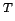
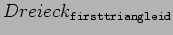
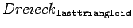
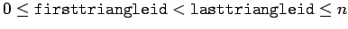

Nächste Seite: trianglelist2setspeed Aufwärts: Public member von Fluid Vorherige Seite: trianglelist2teleport Inhalt
void Fluid::trianglelist2shift(float shift_x, float shift_y, float shift_z, float * trianglelist, unsigned int firsttriangleid, unsigned int lasttriangleid)
Ähnlich wie bei trianglelist2teleport (5.4.3) wird hier jedes Fluidpartikel, das mit einem der Begrenzungsdreiecke kollidiert, d.h. in dessen aktiven Bereich gelangt, im Raum verschoben. Da das Ziel dieser Verschiebung aber eine echte Ausdehnung hat, und zwar die Selbe wie ihr Ursprung, kommt es hier nicht allein aus der Verschiebung zu Instabilität, solange die Flüssigkeit am Ziel zügig abfließen kann. Die Idee hinter dieser Funktion ist, dass Flüssigkeit, die sich im Innern eines Rohres befindet, nicht berechnet werden muß. Liegt das Ziel dieses Shifts allerdings in einem Bereich, wo die Flüssigkeit nicht von alleine abfließt, wird auch hier ein SetSpeed (5.4.5) benötigt, um zu vermeiden, daß Flüssigkeitspartikel an die Position anderer Partikel verschoben werden.
Nähere Informationen zu Kontrollpartikeln finden sich auch in Kapitel 3.2.2.

ist der Vektor, um den die Flüssigkeit verschoben werden soll.
bis
verwendet.